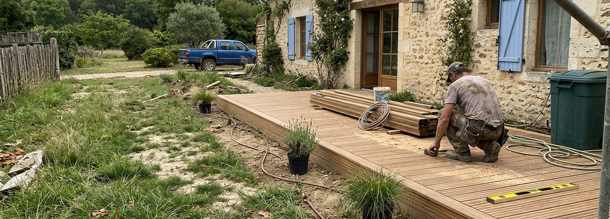
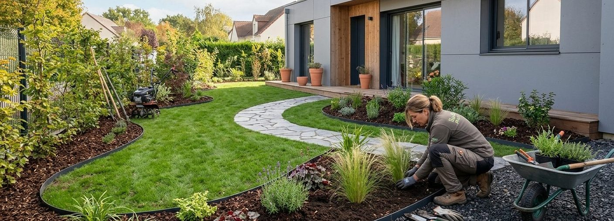
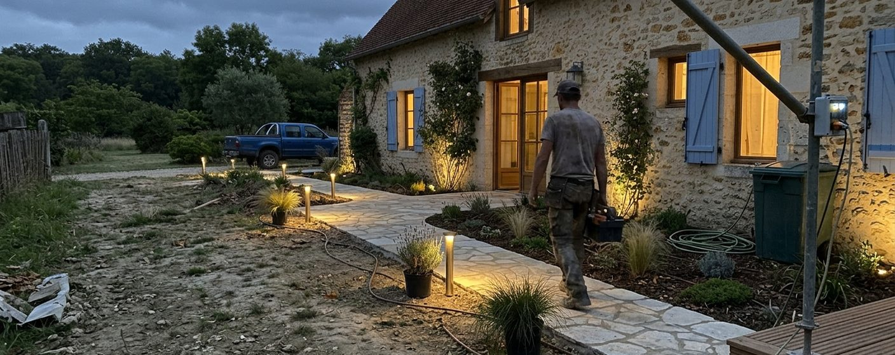
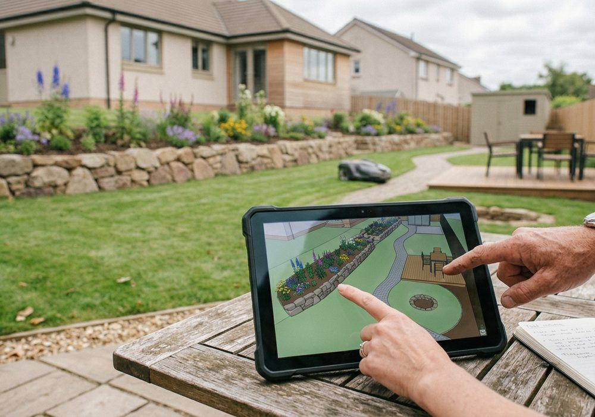
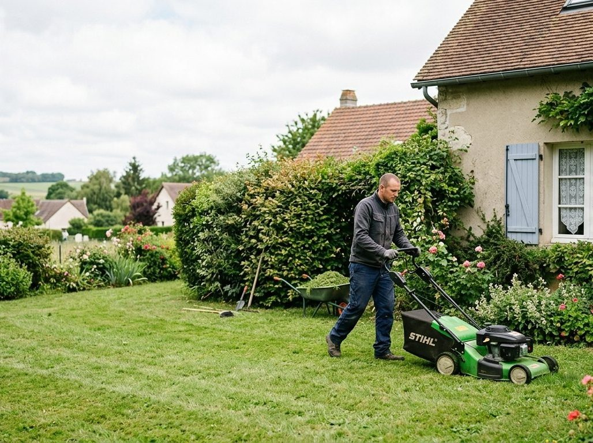
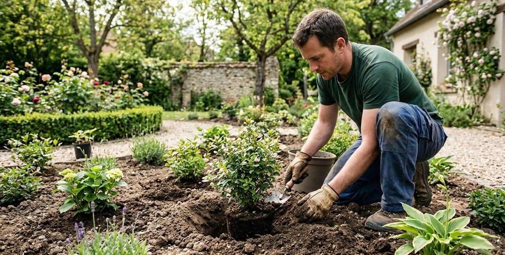
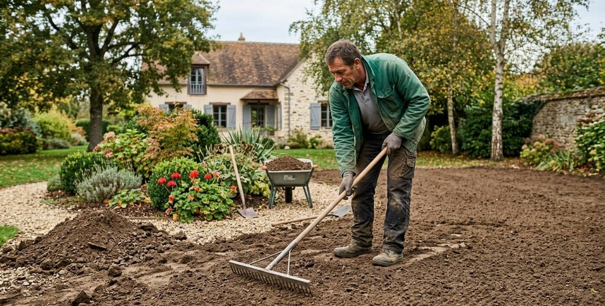

Terrasses
Une terrasse adaptée à votre maison et à votre jardin.
Nos prestations
Quatre savoir-faire pour vos extérieurs, à Gambais (78).



Prestation 1
Création de terrasses et d'allées, pensées pour votre maison et pour l'usage que vous en avez.

Une terrasse adaptée à votre maison et à votre jardin.

Une allée pour relier la maison, le jardin et l'entrée.
Prestation 2
Conception et aménagement de massifs et de pelouses, selon la forme de votre terrain et vos envies.


Image d'illustration.
Prestation 3
Tonte, taille et désherbage : l'entretien courant de votre jardin, selon vos besoins.


Prestation 4
Choix et mise en terre de végétaux, pose de gazon ou semis : parlons de votre projet.
Dites-nous ce dont vous avez besoin : terrasse, plantations, entretien ou aménagement.
© L'Atelier des Terrasses et du Paysage · Maquette de démonstration